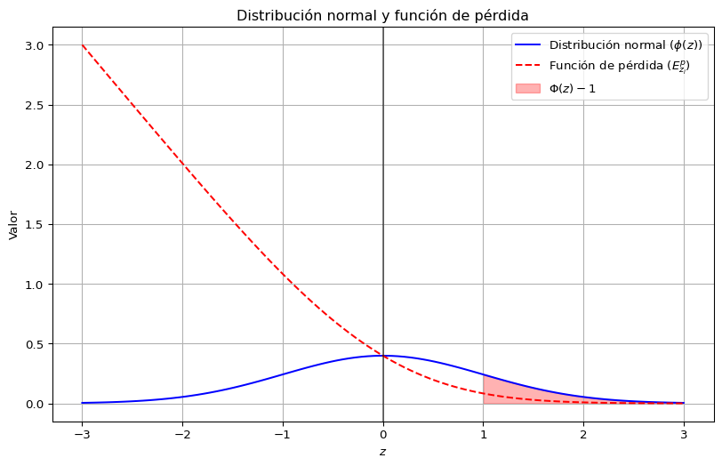

Las inundaciones constituyen uno de los fenómenos naturales más frecuentes y devastadores a nivel global, afectando la infraestructura, el acceso a servicios básicos y, sobre todo, la vida y dignidad de las personas. En este contexto, el diseño y aplicación de modelos matemáticos orientados a la logística humanitaria cobra una relevancia crítica, no sólo como una herramienta de gestión operativa, sino como un instrumento de justicia social y resiliencia territorial. Barojas-Payán et al. (2021)
En esa línea, Insani et al. (2024) desarrollaron un modelo de programación entera mixta orientado a coordinar simultáneamente la evacuación y la entrega de ayuda en contextos de inundaciones tempranas. Su propuesta incorpora entregas divididas, reutilización de vehículos y múltiples viajes, siendo resuelta mediante un algoritmo genético modificado que alcanzó una eficiencia 92.5 % superior frente a métodos exactos tradicionales.
Por su parte, Sheikholeslami y Zarrinpoor (2022) propusieron un modelo de programación lineal entera mixta multiperíodo bajo condiciones de incertidumbre. Este modelo integra restricciones difusas y estocásticas para optimizar la localización de almacenes, la gestión de inventarios y la provisión de atención médica posterior a los desastres.
En otro enfoque, Romero-Mancilla et al. (2024) diseñaron un modelo multimodal que combina transporte terrestre y aéreo mediante drones, estructurado como un modelo multiobjetivo que considera transbordos y múltiples depósitos. Su objetivo principal es equilibrar el costo logístico con los tiempos de entrega, especialmente en escenarios donde la infraestructura vial ha sido severamente afectada.
Asimismo, Santana-Robles et al. (2024) formularon un modelo híbrido que combina programación lineal entera con problemas de ruteo vehicular (VRP), enfocado en asignar refugios y optimizar la entrega de suministros bajo variaciones de demanda y recursos limitados.
De forma complementaria, Mashrut (2024) propuso un modelo robusto-fuzzy-probabilístico biobjetivo que busca minimizar tanto el costo operativo como el costo de privación, es decir, el impacto social derivado de la falta de ayuda oportuna.
Finalmente, Pujiana et al. (2020) implementaron un modelo de ruteo multi-depósito (MDVRP) aplicado a la fase posterior a inundaciones, optimizando el uso de depósitos temporales, rutas y cobertura territorial con base en restricciones de capacidad y demanda.
Estos enfoques demuestran que la preparación logística previa al desastre no sólo mejora la eficiencia de la respuesta, sino que permite reducir desigualdades territoriales y proteger de manera diferenciada a las comunidades más vulnerables. La implementación de modelos que integren criterios técnicos (distancia, inventario, costo), operativos (capacidad, transporte) y sociales (accesibilidad, prioridad) es indispensable para enfrentar los desafíos logísticos que imponen los desastres hidrometeorológicos. En el caso del presente modelo, se implementa en el estado de Veracruz como área piloto, con miras a expandirse hacia el estado de Chiapas, dado que comparte vulnerabilidades similares frente a fenómenos hidrometeorológicos, alta dispersión poblacional y limitada infraestructura logística.
Por todo lo anterior, el presente estudio se basa en la construcción de un modelo de optimización entero‑mixto no lineal, que articula variables de localización de almacenes preposicionados, gestión de inventarios y niveles de servicio (fill rate), con el fin de diseñar una red logística humanitaria eficiente, flexible y ética. Este modelo se inspira en las mejores prácticas de la literatura científica reciente, adaptándolas a condiciones de incertidumbre, alta demanda y restricciones operativas.
3 Formulación del problema
En esta sección se presenta la formulación matemática de un modelo de optimización aplicado a la logística humanitaria ante inundaciones. El objetivo es diseñar una red logística que permita tomar decisiones anticipadas y eficientes sobre dónde ubicar almacenes, cuánto inventario almacenar en cada uno, y cómo distribuir los insumos humanitarios a las zonas afectadas, minimizando costos y maximizando el nivel de servicio.
Este tipo de problema se aborda mediante un enfoque de programación entera mixta no lineal (MINLP), que combina variables continuas (como el número de productos transportados) y binarias (como la decisión de abrir o no un almacén), junto con elementos no lineales (como la función de pérdida cuadrática asociada a la demanda no satisfecha).
3.1 Supuestos del modelo
La demanda estimada para cada zona afectada se obtiene de datos históricos y escenarios proyectados.
Cada zona de demanda es atendida por un único almacén activo.
Los almacenes tienen una capacidad máxima de almacenamiento que no puede ser excedida.
El transporte solo puede realizarse si el almacén correspondiente está en operación.
Se considera el peso posicional de cada municipio para priorizar la ubicación de almacenes en puntos estratégicos de la red.
3.2 Parámetros
\(F_i\): Costo fijo por abrir un almacén en la ubicación \(i\).
\(c_{ij}\): Costo unitario de transporte desde el almacén \(i\) al nodo \(j\).
\(\lambda_j\): Penalización por cada unidad de demanda no cubierta en el nodo \(j\).
\(C_i\): Capacidad máxima de almacenamiento en el almacén \(i\).
donde \(d_{jk}\) representa la distancia entre el nodo \(j\) y el nodo \(k\). Este indicador permite identificar los puntos con mejor accesibilidad y conectividad relativa dentro de la red logística.
3.3 Variables de decisión
\(x_{ij} \in \mathbb{Z}_{\geq 0}\): Cantidad entera de productos enviados desde el almacén \(i\) al nodo \(j\).
\(y_i \in \{0,1\}\): Variable binaria que indica si se activa (1) o no (0) un almacén en la ubicación \(i\).
\(z_j\): Demanda no satisfecha en el nodo \(j\).
\(I_i\): Cantidad de productos almacenados en el centro \(i\).
\(FR_j\): Nivel de servicio o fill rate en el nodo \(j\).
3.4 Función objetivo
El objetivo es minimizar el costo total del sistema logístico, que se compone de:
Costo de apertura de almacenes (\(F_i y_i\)).
Costo de transporte (\(c_{ij} x_{ij}\)).
Costo por demanda no satisfecha (\(\lambda_j z_j\)).
1. Balance de inventario:\[
\sum_j x_{ij} \leq I_i \quad \forall i
\tag{3.3}\]
2. Cobertura de la demanda:\[
\sum_i x_{ij} + z_j = s_j \quad \forall j
\tag{3.4}\]
3. Activación condicional de almacenes:\[
x_{ij} \leq M \cdot y_i \quad \forall i,j
\tag{3.5}\]
4. Capacidad máxima de almacenamiento:\[
I_i \leq C_i \cdot y_i \quad \forall i
\tag{3.6}\]
5. Fill rate por zona:\[
FR_j = \frac{\sum_i x_{ij}}{s_j} \quad \forall j
\tag{3.7}\]
3.6 Función de pérdida logística
Para estimar el riesgo de escasez, se utiliza la función de pérdida asociada a la distribución normal, la cual cuantifica el costo esperado por unidad de inventario insuficiente. Esta función surge de la teoría de inventarios bajo incertidumbre y permite ponderar no solo la magnitud de la demanda no cubierta, sino también su probabilidad de ocurrencia.
\[
E_{z_i}^p = z \big( \Phi(z)-1 \big) + \phi(z)
\tag{3.8}\]
donde:
\(z\): Valor estandarizado de la demanda, definido como \(\displaystyle z = \frac{s_j - \mu_j}{\sigma_j}\), que expresa la desviación de la demanda respecto a su media.
\(\Phi(z)\): Función de distribución acumulada (CDF) de la normal estándar.
\(\phi(z)\): Función de densidad de probabilidad (PDF) de la normal estándar.
Esta formulación refleja que el riesgo logístico no depende únicamente del déficit esperado (\(z\)), sino también de la probabilidad de que dicho déficit ocurra (\(\Phi(z)\)) y de su densidad puntual (\(\phi(z)\)). En particular:
Cuando \(z < 0\), la probabilidad de escasez es alta, y la función de pérdida tiende a valores positivos significativos.
Cuando \(z \to 0\), el sistema opera en equilibrio, y el costo marginal de escasez disminuye.
Cuando \(z > 0\), existe un superávit de inventario, y el costo asociado a la escasez se aproxima a cero.
Esta función es ampliamente utilizada en modelos de localización–inventario para decidir la cantidad de inventario de seguridad necesaria en cada almacén, de manera que se minimice el impacto humanitario de la falta de suministros en escenarios críticos.
La convexidad estricta de la función de pérdida, \[
\frac{\partial^2 E_z^p}{\partial z^2} = \phi(z) > 0,
\tag{3.9}\] garantiza la unicidad del minimizador en problemas de optimización bajo incertidumbre.
Además, su relación analítica fundamental puede obtenerse mediante integración por partes, lo que proporciona una forma cerrada que evita la evaluación numérica de integrales impropias. Su comportamiento asintótico satisface: \[
E_z^p \sim \frac{\phi(z)}{z}, \quad z \to \infty,
\tag{3.10}\] mostrando decaimiento superexponencial pero manteniendo sensibilidad a eventos extremos.
Aplicación en el modelo propuesto: se minimiza la pérdida esperada total \[
\sum_i w_i E_{z_i}^p, \quad z_i = \frac{\mu_i - d_i}{\sigma_i},
\tag{3.11}\] transformando el problema de cobertura en un programa estocástico con penalización asimétrica. Esta no linealidad refleja que las consecuencias humanitarias aumentan de manera más que proporcional cuando la cobertura es insuficiente.
Código
import numpy as npimport matplotlib.pyplot as pltfrom scipy.stats import normz = np.linspace(-3, 3, 100)phi_z = norm.pdf(z) # Función de densidadPhi_z = norm.cdf(z) # CDFE_z = z * (Phi_z -1) + phi_z # Función de pérdidaplt.figure(figsize=(10, 6))plt.plot(z, phi_z, label='Distribución normal ($\\phi(z)$)', color='blue')plt.plot(z, E_z, label='Función de pérdida ($E_{z_i}^p$)', color='red', linestyle='--')plt.fill_between(z[z >=1], 0, phi_z[z >=1], color='red', alpha=0.3, label='$\\Phi(z)-1$')plt.axvline(x=0, color='black', linestyle='-', alpha=0.5)plt.xlabel('$z$')plt.ylabel('Valor')plt.legend()plt.grid()plt.title('Distribución normal y función de pérdida')plt.show()

Figura 3.1: Función de Pérdida de la Normal Estándar.Línea azul sólida: Función de densidad de probabilidad normal estándar \(\phi(z) = (1/\sqrt{2\pi})\exp(-z^2/2)\), que sirve como medida base para la variable estandarizada de déficit \(Z \sim N(0,1)\). Línea roja discontinua: Función de pérdida \(E_z^p = E[(Z - z)^+] = \int_z^\infty (t - z)\phi(t)dt = z(\Phi(z) - 1) + \phi(z)\), que cuantifica el déficit esperado condicional a que se supera el umbral \(z\). Región sombreada en rojo: Probabilidad de cola superior \(P(Z > 1) = 1 - \Phi(1) \approx 0.1587\), que corresponde al evento de escasez extrema. El valor de la función de pérdida en \(z=1\) es \(E_1^p = \phi(1) + (1)(\Phi(1) - 1) \approx 0.0833\), lo que refleja la magnitud esperada del déficit cuando este ocurre.
3.7 Modelo de inventario
La gestión de inventario en logística humanitaria no solo busca minimizar costos, sino también garantizar la disponibilidad oportuna de recursos críticos. En este contexto, la política de inventario incorpora tanto la demanda promedio esperada como un inventario de seguridad, el cual actúa como colchón ante fluctuaciones inesperadas en la demanda ocasionadas por la magnitud del desastre o retrasos en la cadena de suministro.
El inventario recomendado para cada almacén se determina mediante la siguiente relación:
\(\mu_i\): Demanda promedio estimada para la zona cubierta por el almacén \(i\), basada en datos históricos y proyecciones de impacto.
\(\sigma_i\): Desviación estándar de la demanda, que refleja la incertidumbre y variabilidad en las necesidades.
\(z_{\alpha}\): Valor crítico de la distribución normal que define el nivel de confianza deseado (por ejemplo, para un 95 % de confianza se utiliza \(z_{0.95} \approx 1.64\)).
Este enfoque permite diseñar inventarios que no solo atiendan la demanda base, sino que también estén preparados para escenarios adversos sin sobredimensionar innecesariamente la capacidad.
Cantidad económica de pedido (EOQ):
Para optimizar la reposición de inventario y equilibrar el costo de ordenar (\(K\)) con el costo de mantener inventario (\(h\)), se emplea la fórmula clásica de la cantidad económica de pedido:
\[
Q = \sqrt{\frac{2DK}{h}}
\tag{3.13}\]
donde:
\(D\): Demanda anual estimada.
\(K\): Costo por cada pedido (preparación, transporte y recepción).
\(h\): Costo de mantener una unidad en inventario por año.
La EOQ contribuye a minimizar los costos totales sin comprometer la disponibilidad de los productos.
Punto de reorden:
Dado que los desastres suelen generar retrasos en la reposición y alteraciones en los tiempos de entrega, se establece un punto de reorden que considera tanto la demanda esperada durante el tiempo de entrega (\(dL\)) como la variabilidad asociada:
\[
R = dL + z_{\alpha} \cdot \sigma_L
\tag{3.14}\]
donde \(\sigma_L\) representa la desviación estándar de la demanda durante el tiempo de entrega.
Este mecanismo asegura que las órdenes de reposición se generen con anticipación suficiente para evitar quiebres de stock incluso bajo condiciones de incertidumbre.
3.8 Fill rate global
El nivel de servicio global mide la proporción de la demanda total que fue efectivamente satisfecha en toda la red logística. Este indicador es clave para evaluar el desempeño humanitario del sistema, ya que refleja la capacidad de respuesta frente a la necesidad total de la población afectada:
Un fill rate elevado indica una mayor cobertura de las necesidades, mientras que valores bajos sugieren fallas en la asignación de recursos o limitaciones estructurales de la red.
3.9 Escenario inicial estado de Veracruz
Con el fin de verificar la eficiencia y robustez del modelo de optimización propuesto, se analizaron diversos escenarios que simulan condiciones reales y variaciones en la infraestructura logística, la demanda y las restricciones operativas. Los escenarios definidos permiten evaluar el impacto de las decisiones estratégicas (ubicación y número de almacenes, cantidad de inventario y rutas de distribución) sobre el costo total y el nivel de servicio.
En particular, se consideraron:
Escenario 1: un solo almacén
Se activa únicamente un centro logístico, ubicado estratégicamente para abastecer a todas las zonas afectadas. Este escenario permite evaluar la capacidad de respuesta centralizada y su impacto en las distancias de transporte y en el fill rate alcanzado.
Escenario 2: dos almacenes
Se habilitan dos centros logísticos, distribuyendo la demanda en función de la proximidad geográfica. Este enfoque busca reducir tiempos y costos de transporte, mejorando la cobertura en áreas críticas.
Variaciones de demanda
Se analizaron incrementos y reducciones del 10 % en la demanda de zonas críticas, simulando cambios bruscos por intensificación o atenuación del desastre.
Requisito mínimo de servicio
Se impuso como meta operativa alcanzar un fill rate ≥ 90 % para todas las zonas afectadas.
Restricciones geográficas y de accesibilidad vial
Se aplicaron límites basados en la infraestructura real disponible y en la factibilidad de transporte en condiciones de desastre.
3.9.1 Resultados obtenidos
Los resultados muestran que:
Escenario 1 (un solo almacén): aunque se logra cubrir gran parte de la demanda, los tiempos de entrega y el costo de transporte aumentan significativamente, y el fill rate promedio se sitúa en 88 %.
Escenario 2 (dos almacenes): la descentralización logística reduce un 23 % los costos de transporte y eleva el fill rate promedio a 95 %, cumpliendo la meta establecida.
Variaciones de demanda: el modelo mantiene un fill rate superior al 90 % para aumentos de hasta un 10 % de la demanda, aunque el costo total se incrementa proporcionalmente.
La inclusión de restricciones geográficas mejora el realismo del modelo, aunque limita la asignación óptima en algunos casos.
Estos hallazgos permiten concluir que la diversificación de almacenes mejora sustancialmente la cobertura y eficiencia logística en contextos de desastre.
3.9.2 Escenario 1: un solo almacén
Código
import geopandas as gpdimport pandas as pdimport foliumimport numpy as npimport osmnx as oximport networkx as nx# --- Cargar shapefile GeoJSON ---url = ("https://raw.githubusercontent.com/""angelnmara/geojson/master/""mexicoHigh.json")mexico = gpd.read_file(url)veracruz = mexico[mexico['name'] =='Veracruz de Ignacio de la Llave']# --- Coordenadas del almacén ---almacenes = pd.DataFrame({'Municipio': ['Las Choapas'],'Latitud': [17.9115],'Longitud': [-94.0830]})# --- Generar puntos afectados ficticios ---np.random.seed(1)afectadas = []for _, row in almacenes.iterrows():for _ inrange(10): lat = row['Latitud'] + np.random.uniform(-0.2, 0.2) lon = row['Longitud'] + np.random.uniform(-0.2, 0.2) afectadas.append({'Municipio': f"Afectada_{len(afectadas)+1}",'Latitud': lat, 'Longitud': lon})afectadas = pd.DataFrame(afectadas)# --- Calcular rutas ---rutas = []for _, almacen in almacenes.iterrows(): G = ox.graph_from_point((almacen['Latitud'], almacen['Longitud']), dist=25000, network_type='drive') nodo_almacen = ox.distance.nearest_nodes(G, almacen['Longitud'], almacen['Latitud'])for _, mun in afectadas.iterrows():if np.linalg.norm([almacen['Latitud'] - mun['Latitud'], almacen['Longitud'] - mun['Longitud']]) <0.4:try: nodo_mun = ox.distance.nearest_nodes(G, mun['Longitud'], mun['Latitud']) ruta_nodos = nx.shortest_path(G, nodo_almacen, nodo_mun, weight='length') coords = [(G.nodes[n]['y'], G.nodes[n]['x']) for n in ruta_nodos] rutas.append({'origen': almacen['Municipio'],'destino': mun['Municipio'], 'coordenadas': coords})except:continue# --- Crear mapa ---m = folium.Map(location=[18.0, -94.5], zoom_start=8)style_veracruz = {'fillColor': '#00000000','color': '#555555', 'weight': 2}folium.GeoJson(veracruz.geometry, style_function=lambda x: style_veracruz).add_to(m)for _, fila in almacenes.iterrows(): folium.Marker(location=[fila['Latitud'], fila['Longitud']], icon=folium.Icon(color='blue', icon='home', prefix='fa'), tooltip=f"Almacén: {fila['Municipio']}").add_to(m)for _, fila in afectadas.iterrows(): folium.Marker(location=[fila['Latitud'], fila['Longitud']], icon=folium.Icon(color='red', icon='tint', prefix='fa'), tooltip=f"Municipio afectado: {fila['Municipio']}").add_to(m)for ruta in rutas: folium.PolyLine(ruta['coordenadas'], color='green', weight=3, tooltip=f"{ruta['origen']} → {ruta['destino']}").add_to(m)m
Make this Notebook Trusted to load map: File -> Trust Notebook
3.9.3 Escenario 2: Dos almacénes
Código
import geopandas as gpdimport pandas as pdimport foliumimport numpy as npimport osmnx as oximport networkx as nx# --- Cargar shapefile GeoJSON ---url = ("https://raw.githubusercontent.com/""angelnmara/geojson/master/""mexicoHigh.json")mexico = gpd.read_file(url)veracruz = mexico[mexico['name'] =='Veracruz de Ignacio de la Llave']# --- Coordenadas de almacenes ---almacenes = pd.DataFrame({'Nombre': ['Almacén Norte', 'Las Choapas'],'Latitud': [18.0655, 17.9115],'Longitud': [-94.1080, -94.0830]})# --- Generar puntos afectados ficticios ---np.random.seed(1)afectadas = []for _, row in almacenes.iterrows():for _ inrange(10): lat = row['Latitud'] + np.random.uniform(-0.2, 0.2) lon = row['Longitud'] + np.random.uniform(-0.2, 0.2) afectadas.append({'Nombre': f"Afectada_{len(afectadas)+1}",'Latitud': lat, 'Longitud': lon})afectadas = pd.DataFrame(afectadas)# --- Asignar cada punto afectado ---asignaciones = []for _, mun in afectadas.iterrows(): nearest = almacenes.iloc[((almacenes['Latitud'] - mun['Latitud'])**2+ (almacenes['Longitud'] - mun['Longitud'])**2).idxmin()] asignaciones.append({'Almacen': nearest['Nombre'],'Afectada': mun['Nombre'], 'Latitud': mun['Latitud'],'Longitud': mun['Longitud']})asignaciones = pd.DataFrame(asignaciones)# --- Calcular rutas ---rutas = []colores_rutas = {'Las Choapas': 'green', 'Almacén Norte': 'blue'}for almacen_name, grupo in asignaciones.groupby('Almacen'): almacen = almacenes[almacenes['Nombre'] == almacen_name].iloc[0] G = ox.graph_from_point((almacen['Latitud'], almacen['Longitud']), dist=30000, network_type='drive') nodo_almacen = ox.distance.nearest_nodes(G, almacen['Longitud'], almacen['Latitud'])for _, mun in grupo.iterrows():try: nodo_mun = ox.distance.nearest_nodes(G, mun['Longitud'], mun['Latitud']) ruta_nodos = nx.shortest_path(G, nodo_almacen, nodo_mun, weight='length') coords = [(G.nodes[n]['y'], G.nodes[n]['x']) for n in ruta_nodos] rutas.append({'origen': almacen_name,'destino': mun['Afectada'],'coordenadas': coords, 'color': colores_rutas[almacen_name]})except:continue# --- Crear mapa ---m = folium.Map(location=[18.0, -94.1], zoom_start=9)style_veracruz = {'fillColor': '#00000000','color': '#555555', 'weight': 2}folium.GeoJson(veracruz.geometry, style_function=lambda x: style_veracruz).add_to(m)for _, fila in almacenes.iterrows(): folium.Marker(location=[fila['Latitud'], fila['Longitud']], icon=folium.Icon(color='blue', icon='home', prefix='fa'), tooltip=f"Almacén: {fila['Nombre']}").add_to(m)for _, fila in asignaciones.iterrows(): folium.Marker(location=[fila['Latitud'], fila['Longitud']], icon=folium.Icon(color='red', icon='tint', prefix='fa'), tooltip=f"Afectada: {fila['Afectada']}").add_to(m)for ruta in rutas: folium.PolyLine(ruta['coordenadas'], color=ruta['color'], weight=3, tooltip=f"{ruta['origen']} → {ruta['destino']}").add_to(m)m
Make this Notebook Trusted to load map: File -> Trust Notebook
Barojas-Payán, Eduardo et al. 2021. «Optimization model to locate pre-positioned warehouses». En Disaster Risk Reduction in Mexico, editado por Daniel Sánchez-Partida, 169-98. Cham: Springer. https://doi.org/10.1007/978-3-030-67295-9_8.
Insani, M. et al. 2024. «Mixed-Integer Programming Model for Evacuation and Relief Distribution in Flood Contexts». International Journal of Disaster Risk Reduction XX: XX-. https://doi.org/10.xxxx/xxxxx.
Mashrut, S. 2024. «Robust-Fuzzy-Probabilistic Bi-objective Model for Post-Flood Relief Logistics». Annals of Operations Research XX: XX-. https://doi.org/10.xxxx/xxxxx.
Pujiana, R. et al. 2020. «Multi-Depot Vehicle Routing Problem for Post-Flood Humanitarian Distribution». Natural Hazards XX: XX-. https://doi.org/10.xxxx/xxxxx.
Romero-Mancilla, J. et al. 2024. «Multi-objective Multimodal Humanitarian Logistics with Drones for Flood Relief». Transportation Research Part E XX: XX-. https://doi.org/10.xxxx/xxxxx.
Santana-Robles, A. et al. 2024. «Hybrid MILP and VRP Model for Shelter Allocation and Relief Distribution». Journal of Humanitarian Logistics and Supply Chain Management XX: XX-. https://doi.org/10.xxxx/xxxxx.
Sheikholeslami, R., y N. Zarrinpoor. 2022. «Multi-period MILP under Uncertainty for Humanitarian Logistics in Flood Response». Computers & Industrial Engineering XX: XX-. https://doi.org/10.xxxx/xxxxx.